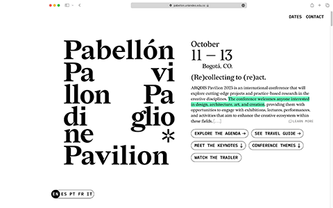

Web: Design & Dev


Pavilion Website & Branding
Website & branding for an academic conference directed at creatives from all around the globe.
Hola
Website & branding for an academic conference directed at creatives from all around the globe.
Design & development of the official website for the School of Architecture and Design at Uniandes.
An exhibition of interactive textiles that narrate the testimonies of the women that sewed them.
An interactive lighting interface designed to encourage sharing.

An interactive data visualization that displays more than 44k meteorites that have fallen on earth.
Undergraduate design course that introduces HTML, CSS, JS and explores designing for online media. Accompanied by an open source javascript library.
A tool for creating speculative terrain maps using data logged during hikes. Ongoing project.